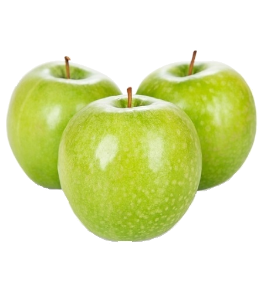

Гренні Сміт
Гренні Сміт — популярний в Австралії, США та західноєвропейських країнах пізньозимовий сорт яблуні. Цей сорт був виведений в Австралії 1868 року. Названий він на честь Марії Енн Сміт, яка прищеплювала дерева від випадкового сіянця. Припускають, що цей сорт є гібридом Яблуні лісової та Яблуні домашньої в ролі запилювача.
Дерево середньоросле, з обернено-пірамідальною незагущеною кроною «плакучого» вигляду. Оскільки генеративні бруньки закладаються переважно на 1-2-річній деревині або кінцях прутиків, зона плодоношення переходить на периферію крони. Цьому запобігають відновлювальним (циклічним) обрізанням. Сорт скороплідний, частково самоплідний, натомість найкращі результати показує за наявності запилювачів: Джонаголд, Айдаред, Професор Шплінгер, Мутсу, Глостер. Зимостійкість достатня.
Зрілі плоди великого розміру (вага може перевищувати 300 грамів). За формою яблука «Гренні Сміт» овальні, округлі або усічено-конічні, темно-зелені, іноді з ніжним кремовим відтінком на сонячному боці, з великою кількістю дрібних рожевих підшкірних цяток. М'якуш зеленуватий, дуже щільний, середньої соковитості, кисло-солодкий. В теплих регіонах може формуватися смугастий рум'янець, підшкірні цятки стають рожевими. Знімна стиглість плодів настає в кінці жовтня — на початку листопада, на дереві вони утримуються міцно, від вітру не обсипаються.